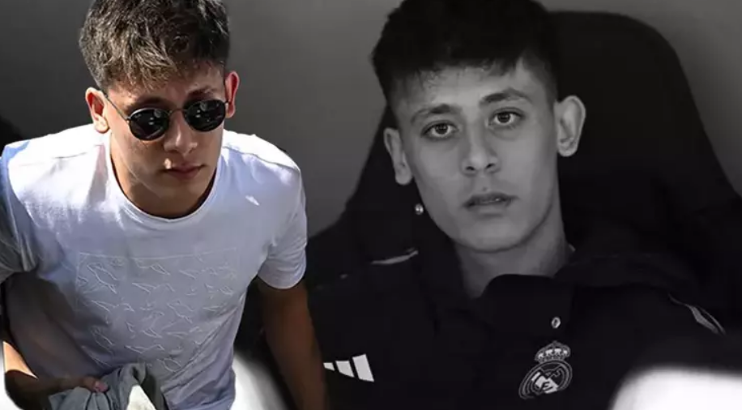
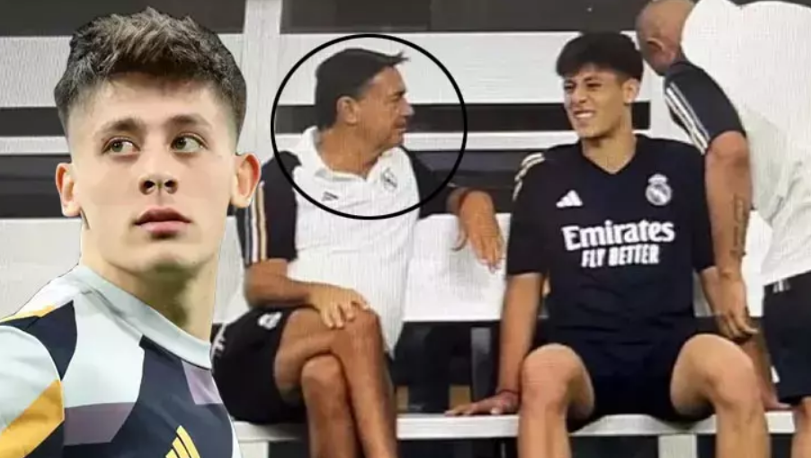

Real Madrid'e transferi sonrası yaşadığı sakatlıklar sebebiyle henüz resmi karşılaşmada forma giyemeyen Arda Güler, bir süre daha sahalardan uzak kalacak.
Fenerbahçe'den 20 milyon euro artı 10 milyon euroluk bonus maddesiyle Real Madrid'e transfer olan Arda Güler yaz transfer sezonunun en çok konuşulan isimlerinden biri olmuştu.
İspanyol basını Arda Güler'in son sakatlığından sonra gözyaşlarını tutamadığını öne sürdü.Real Madrid'e transfer olduktan sonra takımla birlikte ABD kampına giden milli oyuncu, yaşadığı diz sakatlığının ardından İspanya'da ameliyat oldu ve sezon öncesi kamp döneminde takımla çalışma fırsatı bulamadı.
Las Palmas ile oynanacak La Liga maçı öncesi kısa süre de olsa takımla çalışmalarını sürdüren Arda Güler bu kez sol arka adalesinden yaşadığı sakatlık sonrası yaklaşık 4 hafta daha sahalardan uzak kaldı.
Yaşadığı sakatlık problemlerini atlatan ve uzun süre takımla antrenmanlara katılan Arda Güler, Rayo Vallecano ve Braga ile oynanan maçların kadrosunda yer alsa da Ancelotti tarafından sahaya sürülmemişti.

Real Madrid, Arda Güler'in 3 kez üst üste sakatlanması üzerine 6 yıllık kulüp doktoru Niko Mihic'in görevine son verdi.
Defensa Central'ın haberine göre; yaşadığı son sakatlığın ardından ağlayan Arda Güler: "Ne zaman oynayacak olsam aynı şey oluyor..." şeklinde bir serzenişte bulundu.
Arda Güler, 3 kez sakatlanması üzerine, "Bu kötü şans! Yıkıldım! Ne zaman oynayacak olsam... Hep aynı şeyler oluyor." ifadelerini kullandı.
Haberin detayında, Arda Güler'e 3. kez sakatlandığı açıklandığında gözyaşlarına boğulduğu da belirtildi.
Carlo Ancelotti, Valencia maçı öncesi düzenlediği basın toplantısında Arda Güler'in Braga maçı öncesinde sakatlık yaşadığını bu yüzden forma giyemediğini duyurdu.
Arda Güler'in muhteşem bir yeteneğe sahip olduğunu belirten Ancelotti, "Arda Güler geçen sezon bir sakatlık geçirdi ve onu başarıyla atlattı. Ama böyle bir sakatlık geçirdiğinizde, bu küçük sorunları yaşıyorsunuz. Arda Güler hala büyük bir yetenek. Bu yaşadıkları önemsiz. Harika bir geleceği olacak. Maalesef sakatlığı Braga maçından önce oldu. Hala onu rahatsız ediyor ama ciddi bir şey değil... Açıkçası mutsuz çünkü oynamak istiyor. Bu bir geri adım ama nükseden bir şey değil. Onu olabildiğince iyi hale getirmek için önümüzde koca bir milli ara var. İlk sakatlığı geçen sefer geçirdiği menisküs yırtığıydı. Ameliyat oldu ve sık sık olduğu gibi diğer bacağınızın pozisyonu değişiyor ve iyileşme sürecinde kas problemleri yaşayabiliyorsunuz. Ona olan da buydu. Onun geleceği çok güzel, çok güzel. O çok yetenekli bir oyuncu. Oyuncunun hayal kırıklığına uğramasını anlayabiliyorum ama bu sadece bir kas problemi. Benim de kişisel tecrübem var. 21 yaşındayken iki yıl ara verdim ve sonra geri döndüm. Güler'in geleceği şüpheli değil. Bu sadece bir an ve umarım aradan sonra iyileşebilir. Arda'nın sakin ve soğukkanlı olması lazım. Sakatlanan bir oyuncu için şu anda tutunmak her zaman zordur. Diğer takım arkadaşları gelip oynuyor ama siz oynamıyorsunuz. Üzgün ve kızgın olması anlaşılabilir bir durum. Ona bütün kalbimizle sevgi gösteriyoruz... ve acelemiz yok. Onun geleceği burada ve olağanüstü bir yeteneği var." ifadelerini kullanmıştı.